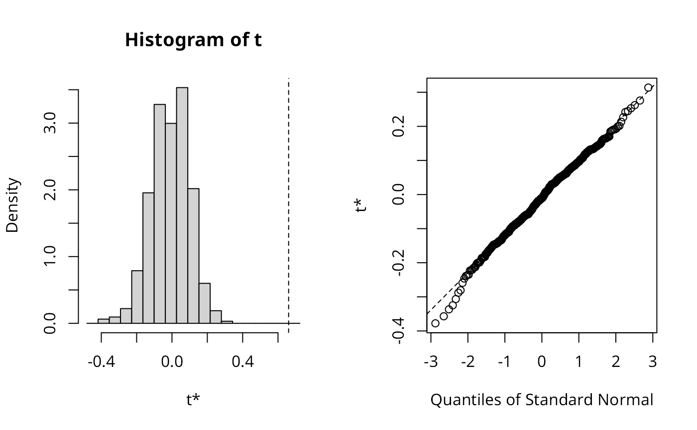

Approximate profile-likelihood estimator (APLE) permutation test
aple.mc.RdA permutation bootstrap test for the approximate profile-likelihood estimator (APLE).
Arguments
- x
a zero-mean detrended continuous variable
- listw
a
listwobject from for examplespdep::nb2listw- nsim
number of simulations
- override_similarity_check
default FALSE, if TRUE - typically for row-standardised weights with asymmetric underlying general weights - similarity is not checked
- useTrace
default TRUE, use trace of sparse matrix
W %*% W(Li et al. (2010)), if FALSE, use crossproduct of eigenvalues ofWas in Li et al. (2007)
References
Li, H, Calder, C. A. and Cressie N. A. C. (2007) Beyond Moran's I: testing for spatial dependence based on the spatial autoregressive model. Geographical Analysis 39, 357-375; Li, H, Calder, C. A. and Cressie N. A. C. (2012) One-step estimation of spatial dependence parameters: Properties and extensions of the APLE statistic, Journal of Multivariate Analysis 105, 68-84.
Author
Roger Bivand Roger.Bivand@nhh.no
Examples
# \dontrun{
wheat <- st_read(system.file("shapes/wheat.gpkg", package="spData")[1], quiet=TRUE)
nbr1 <- spdep::poly2nb(wheat, queen=FALSE)
nbrl <- spdep::nblag(nbr1, 2)
#> Warning: lag 2 neighbour object has 2 sub-graphs
nbr12 <- spdep::nblag_cumul(nbrl)
wheat_g <- wheat
st_geometry(wheat_g) <- NULL
cms0 <- with(wheat_g, tapply(yield, c, median))
cms1 <- c(model.matrix(~ factor(c) -1, data=wheat) %*% cms0)
wheat$yield_detrend <- wheat$yield - cms1
oldRNG <- RNGkind()
RNGkind("L'Ecuyer-CMRG")
set.seed(1L)
boot_out_ser <- aple.mc(as.vector(scale(wheat$yield_detrend, scale=FALSE)),
spdep::nb2listw(nbr12, style="W"), nsim=500)
plot(boot_out_ser)

boot_out_ser
#>
#> DATA PERMUTATION
#>
#>
#> Call:
#> boot(data = x, statistic = aple.boot, R = nsim, sim = "permutation",
#> pre = pre, parallel = parallel, ncpus = ncpus, cl = cl)
#>
#>
#> Bootstrap Statistics :
#> original bias std. error
#> t1* 0.6601805 -0.6708415 0.1092922
library(parallel)
oldCores <- set.coresOption(NULL)
nc <- max(2L, detectCores(logical=FALSE), na.rm = TRUE)-1L
# set nc to 1L here
if (nc > 1L) nc <- 1L
invisible(set.coresOption(nc))
set.seed(1L)
if (!get.mcOption()) {
cl <- makeCluster(nc)
set.ClusterOption(cl)
} else{
mc.reset.stream()
}
boot_out_par <- aple.mc(as.vector(scale(wheat$yield_detrend, scale=FALSE)),
spdep::nb2listw(nbr12, style="W"), nsim=500)
if (!get.mcOption()) {
set.ClusterOption(NULL)
stopCluster(cl)
}
boot_out_par
#>
#> DATA PERMUTATION
#>
#>
#> Call:
#> boot(data = x, statistic = aple.boot, R = nsim, sim = "permutation",
#> pre = pre, parallel = parallel, ncpus = ncpus, cl = cl)
#>
#>
#> Bootstrap Statistics :
#> original bias std. error
#> t1* 0.6601805 -0.6708415 0.1092922
invisible(set.coresOption(oldCores))
RNGkind(oldRNG[1], oldRNG[2])
# }